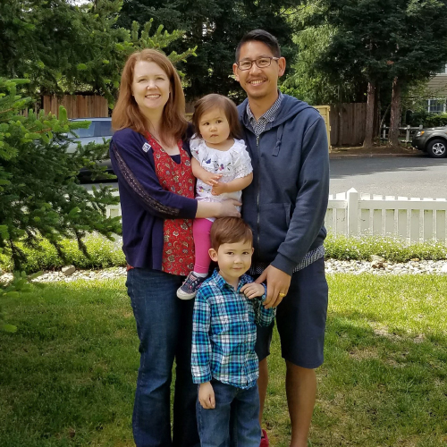

Hi, I'm Andrew. I just got accepted into Rithm School's eighth
cohort. I'm super excited to learn how to create web applications and become a solid
coder. Follow this page to see my progress through the course and with my new career.
Thanks,
Andrew
About Me
I'm half of Lead Money Games, an independent game development
company. On June 15, 2016 we were funded through Kickstarter and on April 4, 2017
we launched our first game on Steam called "Lil Tanks." It's a little shoot 'em up
game that was purely engineered through trial and error and lots of online
tutorials.After a few years of game development, I decided it's time for me to throw myself into full fledged software engineering. I've always loved the intersection of computers and art and I'm excited to see where this takes me.
I also freelance as a digital effects artist having worked on over forty films. This is a vestige of my former life working in the film industry for 10 years.
In my free time, you can usually find me on a hockey rink. I play ice and roller hockey all over the Bay Area and Sonoma County. If I can continue to pay league fees, I am happy.
My family life consists of my amazing wife Samantha, and my two adorable children: Theo and Violet.

ResumÉ
Professional Experience
Nimble Collective
October 2016 - August 2017
Used compositing techniques to fix rendering issues and to add effects to compliment story telling. As a digital effects artist I worked on “Coin Operated(short),” “Sunny and Gerd in Spring Cleaning(short),” “Disrupted Living(web series),” and “Roadside Assistance(short).” Each show was worked on remotely using Nimble Collective's platform.
Mind and Machine VFX
October 2016 - December 2016
Fixed prosthetic seams on actors using digital paint and compositing techniques for the show “Con Man.” Worked with a visual effects supervisor to obtain a certain look that the client requested. All work was completed remotely.
PDI/DreamWorks Animation
June 2009 - February 2015
July 2008 - February 2009
July 2008 - February 2009
Used compositing techniques, 3D projection, digital paint, and articulated rotoscope to fix rendering errors and add finishing touches to shots. Worked on still images, created motion graphics, and fixed stereo issues. Used proprietary node based compositing software, Nuke, After Effects, and Photoshop. Created, documented, updated, and maintained several Python scripts that are used in every shot of every show. Created several scripting and Linux tutorials which are documented on the DreamWorks internal website.
As a Stereoscopic Image Finaling Lead, worked on "Madagascar: Escape 2 Africa," "Monsters Vs. Aliens," “How to Train Your Dragon,” “Shrek Forever After,” “Shrek the Musical,” “Megamind,” “Kung Fu Panda 2,” “Puss in Boots,” “Madagascar 3,” “Rise of the Guardians,” “Turbo,” “Mr. Peabody and Sherman,” “How to Train Your Dragon 2,” “Penguins of Madagascar,” “Home,” “Kung Fu Panda 3,” and “B.O.O.”
PDI/DreamWorks Animation
August 2012 - March 2013
Textured assets with Mari and rendered using proprietary renderer on “How To Train Your Dragon 2.”
In-Three Inc.
March 2009 - June 2009
Converted 2D films into 3D films. Created dynamic clean plates using Nuke, After Effects and Photoshop. Extracted fine hair detail using several keying techniques and composited footage after a depth grading process had been applied. As a stereoscopic compositor, worked on "G-Force."
Golden Era Productions
February 2009 - March 2009
February 2008 - March 2008
February 2008 - March 2008
Composited CG and live action elements together for special interest informational films. Pulled keys, performed digital paint, and articulated rotoscope using After Effects and Nuke. As a compositor, worked on "The How To Of Dianetics," and as a digital effects lead, worked on "Classification and Gradation," which was a 44,000 frame restoration project.
Rotofactory
June 2007 - April 2008
As a digital effects artist, performed articulated rotoscope and digital paint for "Rachel Getting Married," "Get Smart," "The Spider-Wick Chronicles," and as a digital effects lead, worked on "Trinity."
Education
Rithm School
2018 - Present
Curriculum included HTML, CSS and JavaScript, advanced JavaScript concepts, server-side programming with Python, database management and configuration, web security, architecture with Python & Postgres, architecture with Node.js & SQL, React and Redux, hardware and systems design, computer science fundamentals, and data structures and algorithms.
Academy of Art University
2002 - 2007
Curriculum included compositing, matte painting, particles, MEL scripting, editing, match moving, modeling, and animation.
Projects
Here's a few projects that I've completed for
Rithm School's eighth cohort. Each project is built with HTML,
CSS, and JavaScript.